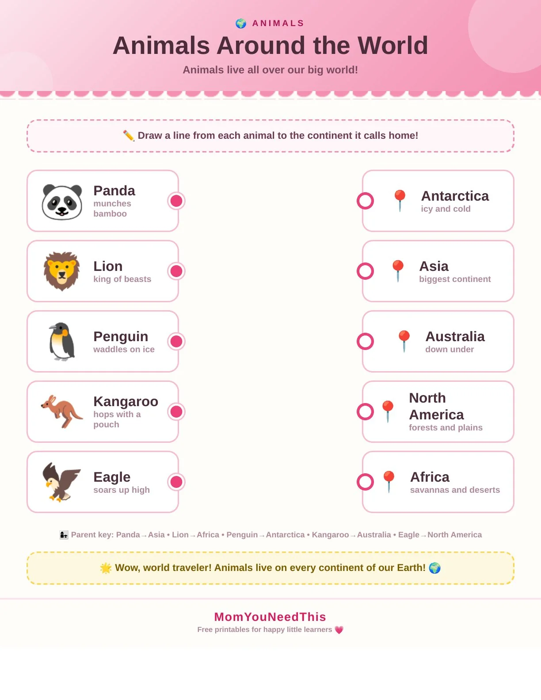

🐟🌊 Animals Around The World A Trip Across The Planet
Quick Answer
This free printable animals around the world activity takes toddlers and preschoolers (ages 2–5) on a continent-by-continent tour: kangaroos and koalas in Australia, lions and giraffes in Africa, pandas in Asia, polar bears in the Arctic and penguins in Antarctica. Kids match animals to continents, discover faraway habitats, and learn why each animal fits its home. Download and print at home with no signup needed.
Take a pretend journey around the world to meet animals from five continents — Asia, Africa, Antarctica, Australia, and North America. From penguins in the snow to lions on the savanna, these activities turn geography into a playful animal adventure.
The matching on this page hides the real lesson: animals are not scattered randomly across the map. Kangaroos live in Australia because their whole family evolved there, isolated by ocean; polar bears and penguins never meet because they live at opposite ends of the Earth. Every animal on the tour is where it is for a reason — and the reason is usually visible in its body.
🐟🌊 Explore Animals Around The World
Match animals to continents, discover faraway habitats, and learn fun facts about creatures from around the globe.
💡 How To Use This Activity
Print the continent pages one at a time and travel as you go: find each continent on a map or globe first, then meet its animals. Let your child pick a favourite animal at every stop, and finish the trip by drawing the one they would most like to meet in real life. The print button opens the full-size page in a new tab if you prefer to print from there.

🖨️ Download Your Free Animals Around The World Printable
Match animals to continents, discover faraway habitats, and learn fun facts about creatures from around the globe. Print it out, grab the crayons, and you're ready — no signup needed.
⬇️ Download Free Printable 🖨️ Print🎁 Free printable for toddlers & preschoolers
🗺️ A World Tour In Seven Stops
Africa — the savanna specialists: giraffes built tall to eat what nobody else can reach, lions hunting in family teams, elephants whose ears, shaped a little like the continent itself, work as radiators in the heat.
Asia — pandas in the bamboo mountains of China, eating the one plant almost nothing else can live on; tigers striped for shadowed forests; camels in the deserts, carrying their own water plan.
Australia — the marsupial continent: kangaroos and koalas raising babies in pouches, wombats digging burrow cities, because Australia's long isolation let a whole different family plan flourish.
North America — bears, raccoons, moose and bald eagles: animals built for forests, winters and very large lakes. South America — the rainforest stack: sloths and toucans in the canopy, jaguars below, more species in one forest than most continents hold.
Europe — hedgehogs, red deer and foxes in the farmed and forested lands. And the poles, kept apart by every geography lesson ever: polar bears in the Arctic north, penguins in the Antarctic south — the two most commonly misplaced animals in children's books, and the pair your child can now correct with confidence.
At every stop, one question does the teaching: “Why does it live HERE?” Long necks, pouches, white coats, stored water — the answers are written on the animals themselves.
❓ Animals Around The World FAQs
What activities are included in Animals Around The World?
This page collects our free animals around the world printables in one place: matching animals to continents, discovering faraway habitats, and learning fun facts about creatures from around the globe — including why polar bears and penguins never meet. Download the printable below and start learning right away.
Are these activities really free?
Yes — every printable on MomYouNeedThis is 100% free to download and print. No signup, no payment, just tap the download button. A globe or a world map on the wall turns this set into a tour you can walk with a finger. A globe or a world map on the wall turns this set into a tour you can walk with a finger.
How do I use these activities with my child?
Print the continent pages one at a time and travel as you go: find each continent on a map or globe first, then meet its animals. Let your child pick a favorite animal at every stop, and ask the tour's standing question — why does it live here? Seven stops, seven favorites, and a world map that now has residents.